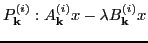
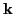
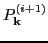
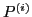
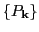
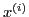
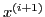
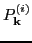
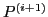

Research in several branches of chemistry and materials science relies on large ab initio numerical simulations. The majority of these simulations are based on computational methods developed within the framework of Density Functional Theory (DFT). DFT provides the means to solve a high-dimensional quantum mechanical problem by transforming it into a large set of coupled one-dimensional equations, which is ultimately represented as a non-linear generalized eigenvalue problem. The latter is solved self-consistently through a series of successive iteration cycles: the solution computed at the end of one cycle is used to generate the input in the next until the distance between two successive solutions is negligible.
Typically a simulations requires tens of cycles before reaching convergence. After the discretization - intended in the general sense of reducing a continuous problem to one with a finite number of unknowns - each cycle comprises dozens of large generalized eigenproblems

where
while the iteration indexGenerally, the eigenproblem

is solved in complete isolation from all
s. This is surprising in light of the fact that each is constructed by manipulating the solutions of all the problems at iteration
, where each sequence groups together eigenproblems with equal k-vector and increasing iteration index
and
, it was shown the angles decrease noticeably after the first few iterations. Even though the overall simulation has not yet converged, the eigenvectors of
and are close to collinear.This result suggests we could use the eigenvectors of as an educated guess for the eigenvectors of the successive problem

. The key element is to exploit the collinearity between vectors of adjacent problems in order to improve the performance of the solver. While implementing this strategy naturally leads to the use of iterative solvers, not all the methods are well suited to the task at hand.In light of these considerations, exploiting the evolution of eigenvectors depends on two distinct key properties of the iterative method of choice: 1) the ability to receive as input a sizable set of approximate eigenvectors and exploit them to efficiently compute the required eigenpairs, and 2) the capacity to solve simultaneously for a substantial portion of eigenpairs. The first property implies the solver achieves a moderate-to-substantial reduction in the number of matrix-vector operations as well as an improved convergence. The second characteristic results in a solver capable of filtering away as efficiently as possible the unwanted components of the approximate eigenvectors.
In accord to these requirements, the class of block iterative methods constitutes the natural choice in order to satisfy property 1); by accepting a variable set of multiple starting vectors, these methods have a faster convergence rate and avoid stalling when facing small clusters of eigenvalues. When block methods are augmented with polynomial accelerators they also satisfy property 2) and their performance is further improved.
In this study we present preliminary results that would eventually open the way to a widespread use of iterative solvers in ab initio electronic structure codes. We provide numerical examples where opportunely selected iterative solvers benefit from the re-use of eigenvectors when applied to sequences of eigenproblems extracted from simulations of real-world materials. At first we experimented with a block method (block Krylov-Schur) satisfying only property 1). At a later stage we selected a solver satisfying both properties (block Chebyshev-Davidson) and performed similar experiments.
In our investigation we vary several parameters in order to address how the solvers behave under different conditions. We selected different size for the sequence of eigenproblems as well as an increasing number of eigenpairs to be computed. We also vary the block size in relation with the fraction of eigenpairs sought after and analyze its influence on the performance of the solver. In most cases our study shows that, when the solvers are fed approximated eigenvectors as opposed to random vectors, they obtain a substantial speed-up. The increase in performance changes with the variation of the parameters but strongly indicates that iterative solvers could become a valid alternative to direct methods.
The pivotal element allowing the achievement of such a result resides in the transposition of the ``matrix'' of eigenproblems emerging from electronic structure calculations; while the computational physicist solves many rows of k-eigenproblems (one for each cycle) we look at the entire computation as made of k-sequences. This shift in focus enables one to harness the inherent essence of the iterative cycles and translate it to an efficient use of opportunely tailored iterative solvers. In the long term such a result will positively impact a large community of computational scientists working on DFT-based methods.